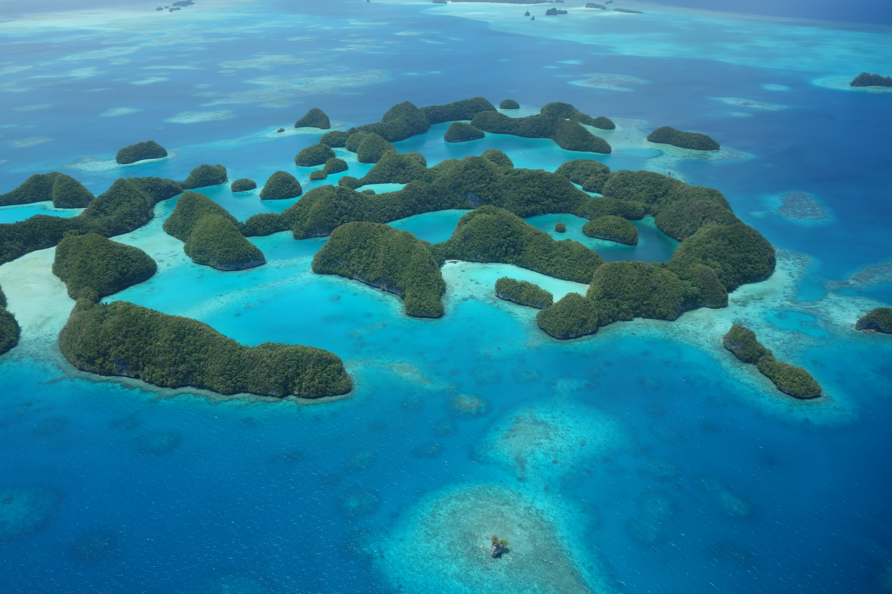

Sobre Palau
Palau é um pequeno país insular localizado no Oceano Pacífico, na região da Oceania. Apesar de possuir um território relativamente pequeno, o país é conhecido mundialmente pelas suas paisagens naturais, praias paradisíacas, águas cristalinas e enorme diversidade de vida marinha. O território é formado por centenas de ilhas cercadas por recifes de coral, vegetação tropical e paisagens consideradas algumas das mais bonitas do planeta.
O país possui uma população pequena e uma cultura fortemente ligada à natureza e ao oceano. Durante muitos anos, os habitantes locais viveram principalmente da pesca, da agricultura e do comércio entre as ilhas. Mesmo com a modernização, muitos costumes tradicionais continuam presentes no cotidiano da população.
A capital de Palau é Ngerulmud, porém a cidade mais conhecida e economicamente importante é Koror. Nessa cidade estão localizados hotéis, restaurantes, lojas, centros turísticos e diversas atividades econômicas. Grande parte dos visitantes que chegam ao país permanece na região de Koror, considerada o principal centro turístico de Palau.
O clima do país é tropical, quente e úmido durante praticamente todo o ano. As temperaturas costumam permanecer elevadas e as chuvas são frequentes, contribuindo para a preservação das florestas e da vegetação tropical. As praias possuem águas transparentes e areia clara, criando paisagens muito valorizadas pelo turismo internacional.
Palau é considerado um dos melhores destinos de mergulho do mundo. As águas cristalinas permitem observar peixes tropicais, tartarugas marinhas, corais coloridos, tubarões, arraias e diversas espécies de animais marinhos. Muitos turistas visitam o país especificamente para mergulhar e conhecer os famosos recifes de coral da região.
Um dos locais mais conhecidos do país são as Rock Islands, um conjunto de pequenas ilhas rochosas cobertas por vegetação tropical. Essas ilhas são consideradas Patrimônio Mundial da UNESCO devido à sua importância ambiental e beleza natural. O local é um dos cartões-postais mais famosos de Palau e recebe visitantes do mundo inteiro.
Além das praias e do mergulho, Palau também é conhecido pelo turismo ecológico e sustentável. O governo criou diversas leis ambientais para proteger os oceanos, os recifes de coral e a vida marinha. Algumas regiões marítimas possuem proteção especial, impedindo atividades que possam prejudicar os ecossistemas naturais.
A economia de Palau depende principalmente do turismo. Milhares de turistas visitam o país todos os anos, movimentando hotéis, restaurantes, empresas de mergulho, transporte marítimo e pequenos comércios locais. A pesca também possui grande importância econômica, sendo uma atividade tradicional entre muitos moradores.
A cultura local mistura tradições antigas da Oceania com influências de outros países que tiveram presença histórica na região, como Espanha, Alemanha, Japão e Estados Unidos. As danças tradicionais, músicas típicas e artesanatos locais continuam sendo valorizados pela população.
Durante a Segunda Guerra Mundial, Palau foi palco de batalhas importantes no Oceano Pacífico. Após diferentes períodos de domínio estrangeiro, o país conquistou sua independência oficialmente em 1994, tornando-se uma nação soberana.
Atualmente, Palau é reconhecido internacionalmente pela preservação ambiental e pela preocupação com os oceanos. O país é frequentemente citado como exemplo de sustentabilidade, mostrando como o turismo pode crescer sem destruir a natureza. A combinação entre paisagens paradisíacas, cultura tradicional e proteção ambiental faz de Palau um dos países mais interessantes da Oceania.
